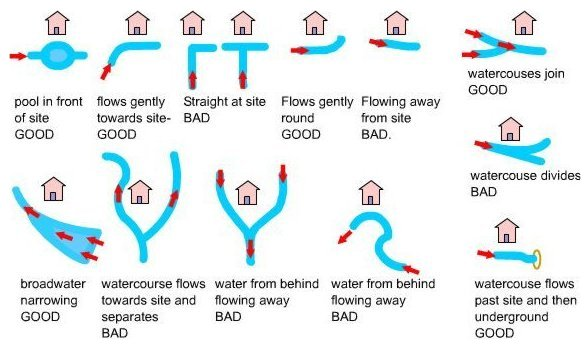
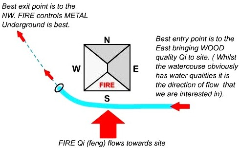

Siting a Building
Environmental Forms
The environment in which a site is located and the form of the building is important in a Feng Shui assessment.
The table illustrates how the form is read in relation to the 5 elements.

Typical Watercourse Flows
The Water Dragon is an important factor in assessing flows of energy to and from the site. The illustration shows the main watercourse flows.
These also apply to road positions and flows of traffic. A further level of detail can be applied using the 5 Element Cycle. (for instance, coming in the direction of metal to a fire location would mean that the site is controlling the flow). However the flows are the most important?). Plotting watercourse flows can be accurately done to within 7.5 degrees of accuracy.

Water Dragon - example south facing site
The diagram below shows simply how to position a water-course to optimum beneficial effect ( for a south facing site).
The WATER DRAGON calculation is basically derived using the 5 ELEMENTS CYCLE in respect of directional flows: accuracy is typically to 7.5 degrees.
NB: The energetic interaction at the main entrance is FIRE Qi ( feng ) flowing towards the site. The watercourse brings an active and newly replenished source of WOOD quality Qi (flowing from the east ). WOOD feeding FIRE is very beneficial (see the 5 element section). The best exit of the watercourse is to the NW (METAL) and underground as FIRE controls METAL.
